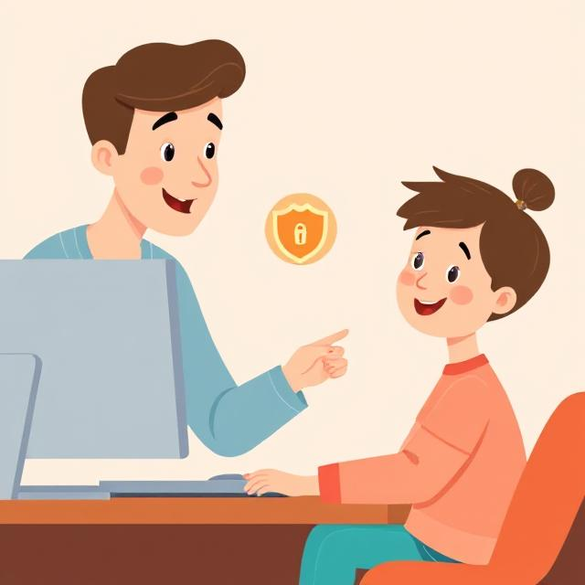

Příběh Anety (14 let)
(Tento příběh ukazuje, jak může kybergrooming probíhat.)
- Aneta si začala psát s klukem jménem Tomáš (15 let) na Instagramu. Byl milý, zajímal se o její život a rozuměl jejím problémům. Měli podobné zájmy a Tomáš ji vždy podporoval, když se cítila špatně.
- Po pár týdnech ji Tomáš požádal o „důvěrnou fotku“. Aneta nejdřív odmítla, ale Tomáš jí tvrdil, že pokud ho má opravdu ráda, měla by mu věřit. Nakonec mu jednu poslala. Druhý den jí napsal, že pokud mu nepošle další, zveřejní tu první.
- Aneta se bála, ale nakonec se svěřila své kamarádce, která ji podpořila a pomohla jí říct to rodičům. Ti případ oznámili policii. Ukázalo se, že Tomáš nebyl Tomáš – byl to 36letý muž, který takto oslovil desítky dívek.
Mýty a fakta o kybergroomingu
❌ Mýtus: Grooming se děje jen hloupým nebo naivním dětem.
✅ Fakt: Může se to stát komukoliv. Groomer je často zkušený manipulátor.
❌ Mýtus: Když někoho zablokuju, problém zmizí.
✅ Fakt: Groomer může kontaktovat oběť z jiného účtu. Důležité je i nahlásit ho.
❌ Mýtus: Grooming končí jen u online komunikace.
✅ Fakt: V mnoha případech se predátoři snaží oběť přimět k osobnímu setkání, což je velmi nebezpečné.
